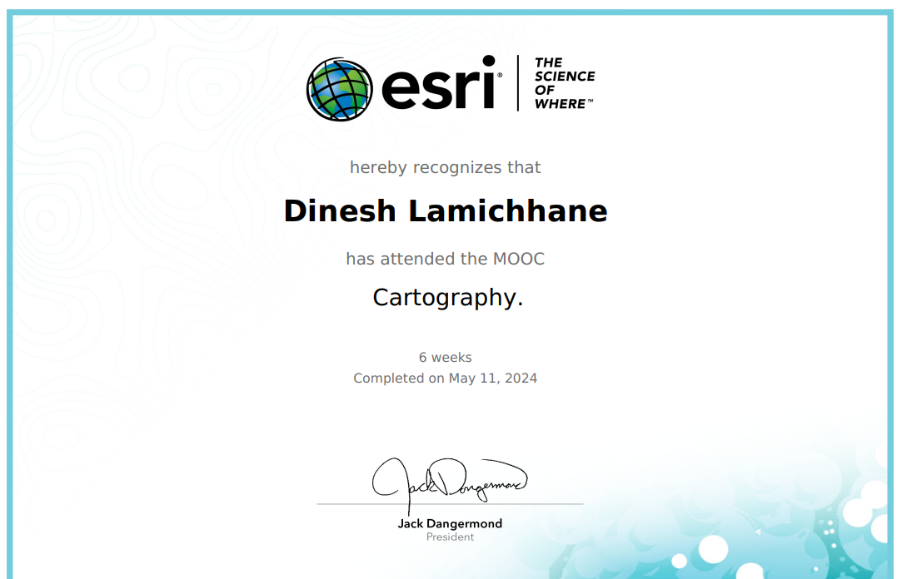

Jacksonville State University
Master’s Degree in Geographic Information Sciences and
Technology
2025 – Present
Jacksonville, Alabama
GIS Professional
I am Dinesh Lamichhane, a geospatial professional specializing in GIS, remote sensing, drone-based mapping, and geospatial data analysis. My work focuses on applying advanced spatial technologies to support disaster risk management, infrastructure planning, environmental monitoring, and sustainable development.
I am a Geomatics Engineer with advanced expertise in Geographic Information Systems (GIS), remote sensing, drone-based mapping, and geospatial surveying. My work combines spatial data analysis, field-based surveying, and geospatial visualization to develop practical solutions for real-world challenges.
I have contributed to projects related to disaster risk assessment, humanitarian mapping, infrastructure planning, tourism mapping, and land use analysis. By integrating satellite imagery, UAV data, GNSS surveys, and spatial modeling, I transform complex geospatial datasets into clear insights that support planning, resilience, and sustainable development.
Recognitions and milestones from my academic and professional journey.
Jacksonville State University - College of Arts, Humanities, and Sciences
Winner – Humanitarian and Disaster Response Category
First Runner-Up – IOE Pashchimanchal Campus, Tribhuvan University
Awarded merit-based scholarship during Bachelor’s Degree in Geomatics Engineering
A few selected projects from my portfolio.

Analyzed migration patterns across Nepal using spatial data and demographic datasets to develop an interactive migration atlas supporting policy planning and regional development analysis.

Conducted GIS-based spatial analysis for cell tower planning in Malaysia to identify optimal locations and improve network coverage and performance.

Created a detailed cartographic visualization of the Khumai Dada trekking route near Pokhara, Nepal, integrating GIS-based terrain modeling and spatial analysis. The map highlights key trekking stops, elevation points, and terrain features to support route planning and tourism awareness.
A few certifications and learning highlights.

Australian Water School

University Corporation for Atmospheric Researchers

Issued by Esri
Selected story-driven geospatial works combining maps, narrative, and visual communication.
Interactive tools and web applications built for geospatial analysis and visualization.
An interactive WebGIS application designed to visualize both real-time and historical earthquake activity worldwide. The platform integrates live earthquake feeds with historical seismic records, enabling users to monitor ongoing events, analyze temporal patterns, and explore earthquake distributions through dynamic, interactive maps.
Built with usability and geospatial analysis in mind, the application provides powerful filtering and visualization tools that support researchers, students, emergency planners, and GIS professionals in understanding seismic activity and identifying high-risk regions.
An ArcGIS Pro geoprocessing tool developed for the Indiana Department of Transportation (INDOT) that automatically detects horizontal roadway curves from centerline data and calculates engineering parameters such as curve radius, delta angle, curve length, and tangent length. Designed to automate roadway geometry analysis, improve processing efficiency, and support transportation safety and infrastructure management across large road networks.
Photogrammetric 3D models produced from drone-based aerial surveys and inspections.
A high-resolution 3D model of Martin Hall produced as a byproduct of a drone-based rooftop inspection survey. Captures detailed surface geometry and texture for structural analysis and documentation.
A high-resolution 3D model of a river-adjacent roadway corridor created from UAV RGB and thermal mapping data collected along the Tallapoosa River, Alabama. Captures detailed terrain, roadway, and riverbank geometry to support flood impact assessment, infrastructure monitoring, erosion analysis, and documentation of collapse-prone areas.